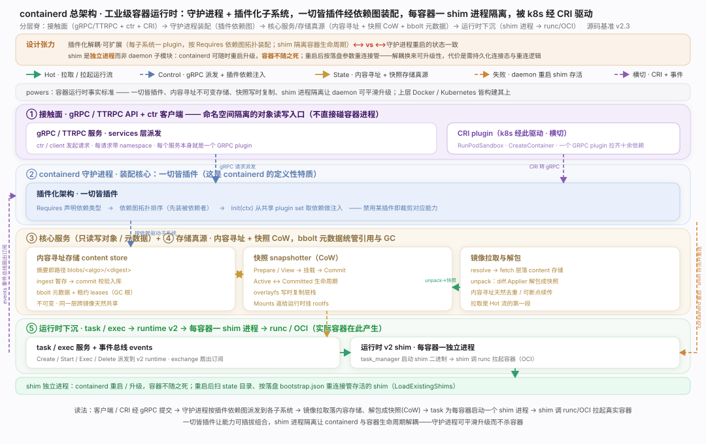
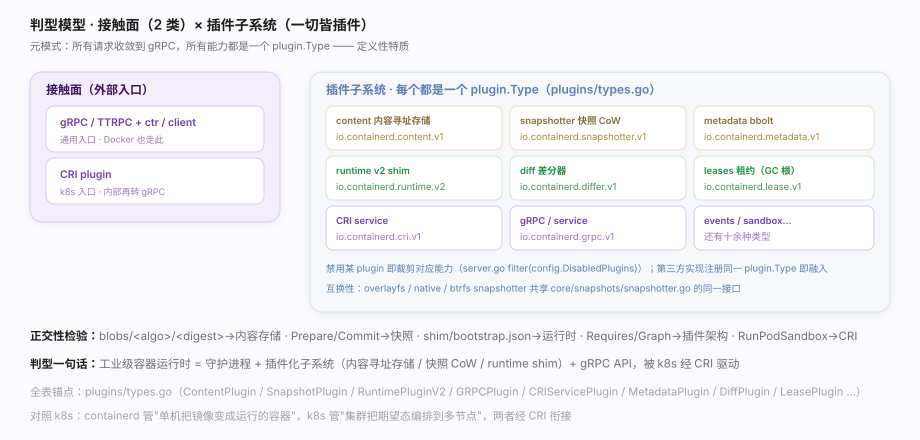
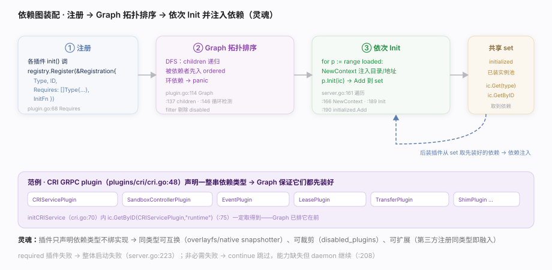
version/version.go:26）：cmd/containerd/server/server.go、vendor/github.com/containerd/plugin/plugin.go、plugins/types.go、core/runtime/v2/、plugins/content/local/store.go、core/snapshots/snapshotter.go。config.toml 的 disabled_plugins 裁剪不用的子系统（server.go:386 filter），减小攻击面与内存。bootstrap.json/state 目录持久（core/runtime/v2/binary.go:142）。core/events/exchange/exchange.go:80）。LoadExistingShims 重连接管，容器不死。Requires 依赖类型，具体实现经依赖图注入，可互换、可裁剪。| 维度 | containerd 落点 | 代表主线 |
|---|---|---|
| 接触面·通用 | gRPC / TTRPC API + ctr（namespace 隔离） | 接口_gRPC服务与客户端 |
| 接触面·k8s | CRI plugin（RunPodSandbox / CreateContainer） | 支撑_CRI插件 |
| 组织机制·灵魂 | 一切皆插件 + 依赖图拓扑装配 | 支撑_插件化架构 |
| 子系统·存储 | content store 内容寻址（blobs/<algo>/<digest>） | 支撑_内容寻址存储 |
| 子系统·文件系统 | snapshotter 写时复制层 | 支撑_快照与CoW层 |
| 子系统·镜像 | pull → unpack（diff.Applier 解包成快照） | 支撑_镜像拉取与解包 |
| 子系统·运行时 | runtime v2 每容器一 shim 进程 → runc | 支撑_运行时shim |
| 子系统·执行/事件 | task/exec 派发 + events 事件总线 | 支撑_task与事件总线 |
| 对照维度 | containerd | Kubernetes | 关键差异 |
|---|---|---|---|
| 定位 | 单机容器运行时 | 集群编排 | k8s 经 CRI 把每节点的容器交给 containerd |
| 组织灵魂 | 一切皆插件 + 依赖图装配 | reconcile 控制循环 | 前者是"如何拼装能力"，后者是"如何持续收敛" |
| 状态真源 | 内容寻址 blob + bbolt 元数据 | etcd 声明态 | containerd 存镜像/容器实体，k8s 存期望态 |
| 进程隔离 | shim 独立进程（容器不随 daemon 死） | kubelet + Pod | shim 让运行时可平滑升级 |
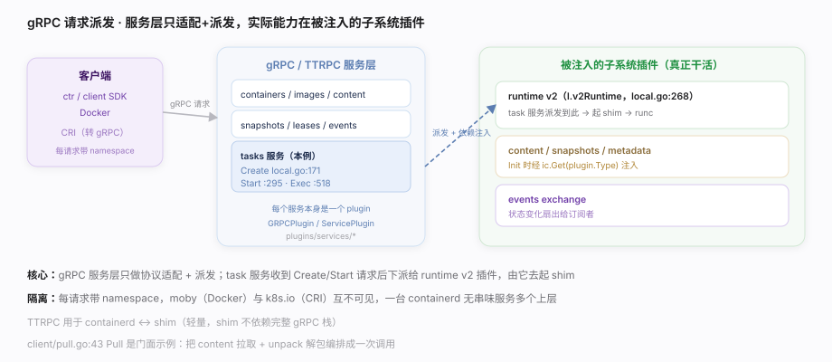
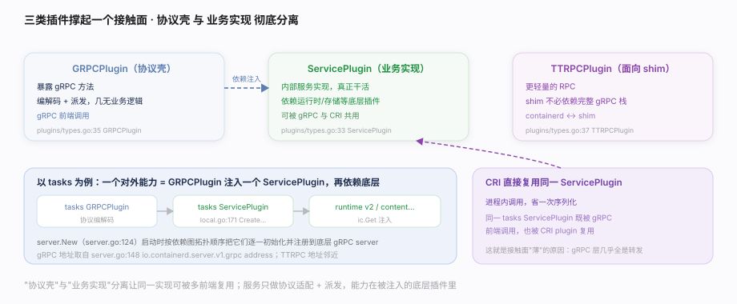
ctr、client SDK、Docker 都经此提交请求；Kubernetes 经 CRI plugin（内部再转 gRPC）。所有请求带 namespace 做租户隔离，只读写对象/元数据，不直接操作容器进程。核实基准：plugins/services/tasks/local.go、cmd/containerd/server/server.go、client/pull.go。server.go:148 读 io.containerd.server.v1.grpc address）；生产环境注意 socket ACL。k8s.io 与 moby 各存各的。| 插件类型 | 常量落点 | 职责 |
|---|---|---|
| GRPCPlugin | plugins/types.go:35 | 暴露 gRPC 方法、协议编解码与派发 |
| ServicePlugin | plugins/types.go:33 | 内部服务实现（可被 GRPC 与 CRI 共用） |
| TTRPCPlugin | plugins/types.go:37 | 面向 shim 的轻量 RPC |
| 机制 | 落点 | 要点 |
|---|---|---|
| namespace 贯穿请求 | context 取出 | moby/k8s.io 互不可见，一台 containerd 无串味服务多上层 |
| client SDK 门面 | client/pull.go:43 Pull · :134 NewUnpacker · :192 fetch | 把"拉一个镜像"编排成一次调用，底层多服务协作 |
| TTRPC 面向 shim | server.go:148 邻近 ttrpc address | shim 不依赖完整 gRPC 栈 |
| 步骤 | 客户端动作 | 落到的 gRPC 服务 |
|---|---|---|
| 1 | ctr image pull | content / images 服务 + transfer |
| 2 | 解包 | snapshots + diff 服务 |
| 3 | 创建容器对象 | containers 服务（写元数据） |
| 4 | 创建 task | tasks 服务（local.go:171 Create） |
| 5 | 启动 task | tasks 服务（local.go:295 Start）→ shim |
| 6 | 订阅事件 | events 服务（exchange 扇出） |
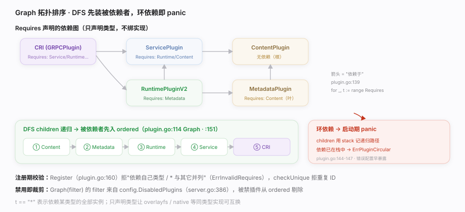
Requires 依赖关系拓扑排序，再依次 Init，后装的插件从共享 plugin set 里取到先装好的依赖实例（依赖注入）。禁用某插件即裁剪对应能力；第三方实现注册对应 plugin.Type 即融入。核实基准：cmd/containerd/server/server.go、vendor/github.com/containerd/plugin/plugin.go、plugins/types.go。Requires 依赖类型的插件；守护进程启动时 registry.Graph 用 DFS 把它们按依赖拓扑排序（被依赖者在前、环依赖即 panic），再依次 Init 并把结果放进共享 plugin set，后装插件经 ic.Get 取到先装好的依赖——这套"依赖图装配 + 注入"就是 containerd 可插拔、可扩展、可裁剪的灵魂。disabled_plugins（config.toml）按需裁剪：不跑 CRI 的场景可禁用，减内存与攻击面（server.go:386）。required_plugins：把关键插件列为必需，缺失即启动失败而非静默降级（server.go:157/:223）。NewContext 按 config.Root/config.State + id 注入（server.go:170），迁移数据要连带这些子目录。Requires 拓扑排序（registry.Graph），被依赖者一定先装。Requires 声明 + ic.Get 注入，保持类型解耦、可互换、可裁剪。config.toml 的 disabled_plugins 即可，Graph 的 filter 会剔除。children 在装配期就 panic(ErrPluginCircularDependency)。| 字段 | 值 | 含义 |
|---|---|---|
| Type | plugins.GRPCPlugin | 它是个 gRPC 服务插件 |
| ID | "cri" | 类型内唯一标识 |
| Requires | CRIServicePlugin / PodSandboxPlugin / SandboxControllerPlugin / EventPlugin / ServicePlugin / LeasePlugin / TransferPlugin / ShimPlugin … | 依赖的子系统类型（cri.go:51） |
| InitFn | initCRIService | 实例化函数，内部 ic.GetByID(CRIServicePlugin,"runtime")（cri.go:75）取依赖 |
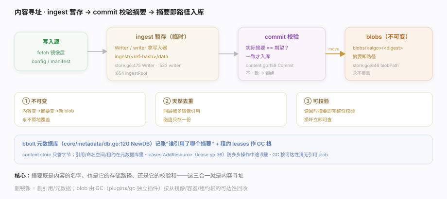
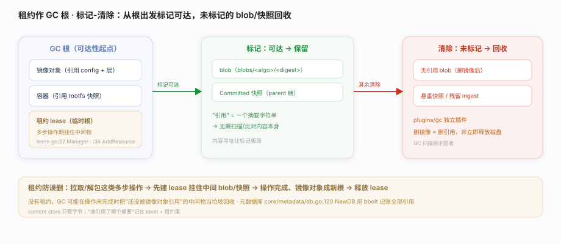
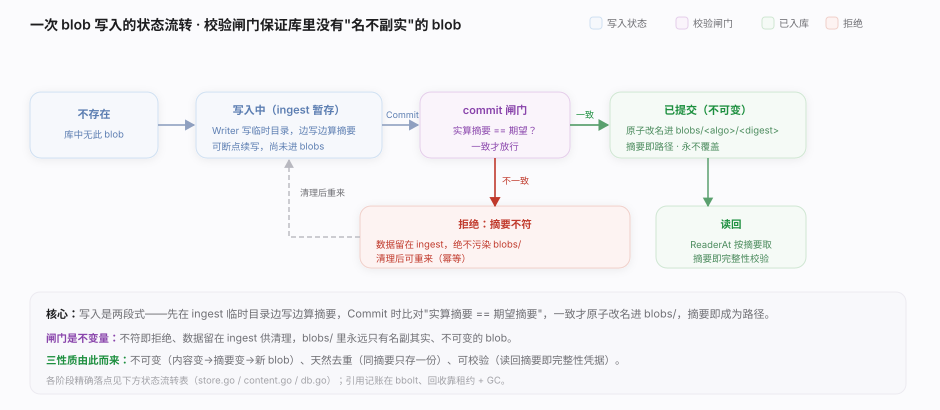
blobs/<algo>/<digest>，不可变、天然去重；bbolt 元数据库统管对象引用与命名空间，租约 leases 作为 GC 根防止误删。核实基准：plugins/content/local/store.go、core/content/content.go、core/metadata/db.go、core/leases/lease.go。blobs/<algo>/<digest>，写入经 ingest 暂存、commit 校验摘要后入库——不可变、天然去重、可校验；bbolt 元数据库记账"谁引用了哪个摘要"、租约作为 GC 根防止多步操作中途误删，GC 再按可达性回收无引用的 blob。ingest/*，可安全清理未 commit 的临时数据。meta.db 大小与压缩。| 阶段 | 落点 | 关键动作 |
|---|---|---|
| 取写入器 | Writer plugins/content/local/store.go:475 | 按 ref 建/复用一个 ingest 写入器 |
| 暂存写入 | ingestRoot plugins/content/local/store.go:654 | 数据流进 ingest/<ref-hash>/data，边写边算摘要 |
| 校验固化 | Commit core/content/content.go:159 | 实算摘要 == 期望摘要才放行 |
| 定址落库 | blobPath plugins/content/local/store.go:646 | 原子改名进 blobs/<algo>/<digest> |
| 读回校验 | ReaderAt core/content/content.go:60 | 按 desc.Digest 定位，摘要即完整性凭据 |
| 路径 | 内容 | 性质 |
|---|---|---|
<root>/blobs/sha256/<encoded> | 已提交的不可变 blob | 内容寻址 · 去重 · 只读 |
<root>/ingest/<ref-hash>/data | 写入中的临时数据 | commit 校验通过后移入 blobs |
<root>/ingest/<ref-hash>/ref | ingest 的起始 ref 名 | 唯一定位进行中的写入 |
bbolt meta.db | 命名空间 / 对象 / 引用 / 租约 | 记账"谁引用了哪个摘要" |
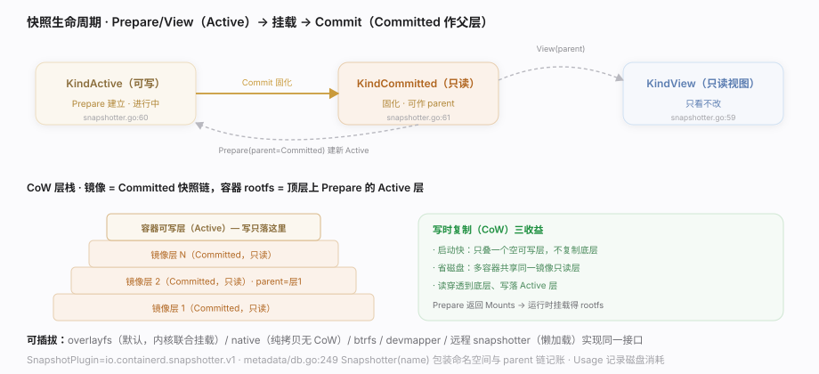
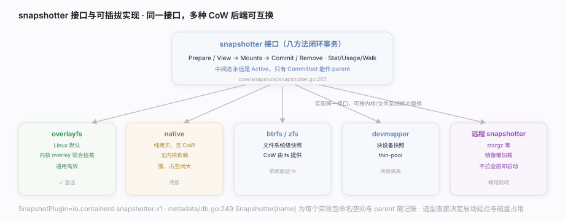
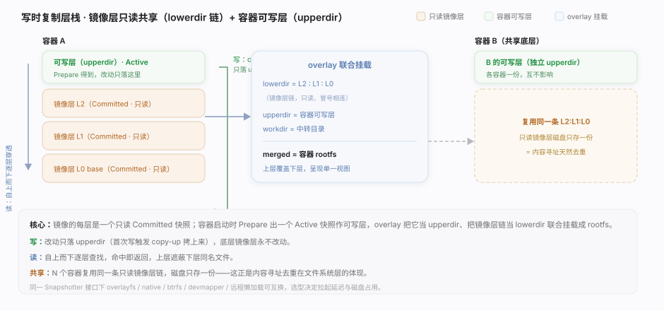
Prepare 一个可写 Active 快照作为 rootfs——改动只落在这一薄层，底层镜像层跨容器共享。核实基准：core/snapshots/snapshotter.go、core/metadata/db.go。| 方法 | 作用 | 落点 |
|---|---|---|
| Prepare | 建可写 Active 快照 | core/snapshots/snapshotter.go:309 |
| View | 建只读快照 | core/snapshots/snapshotter.go:324 |
| Mounts | 取回挂载描述 | core/snapshots/snapshotter.go:293 |
| Commit | 固化成 Committed | core/snapshots/snapshotter.go:334 |
| Remove | 释放 key/快照 | core/snapshots/snapshotter.go:342 |
| Usage/Stat | 记账与查询 | core/snapshots/snapshotter.go:286 · :271 |
| Walk | 遍历快照 | core/snapshots/snapshotter.go:352 |
| 步骤 | 快照操作 | 结果 |
|---|---|---|
| 1 | 解包镜像第 1 层 | Prepare→写入→Commit → Committed 快照 A |
| 2 | 解包第 2 层（parent=A） | Prepare(parent=A)→写→Commit → Committed 快照 B |
| … | 逐层链式 | 镜像 = Committed 快照链 |
| N | 启动容器 | Prepare(parent=顶层) → Active 快照（容器 rootfs） |
| N+1 | 容器运行 | 读穿透到底层、写只落 Active 层（CoW） |
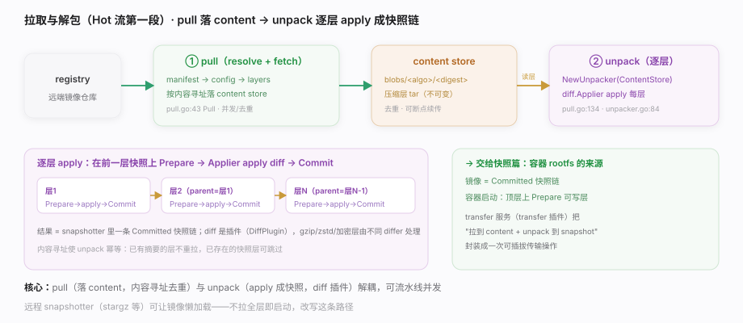
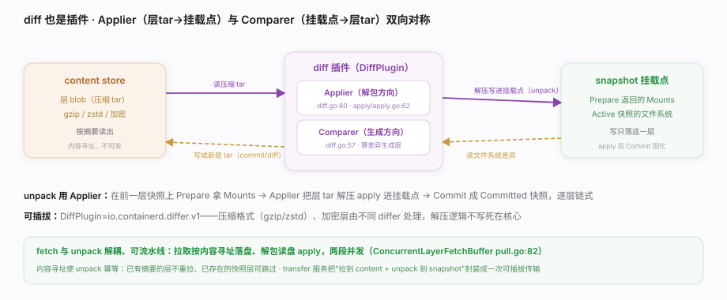
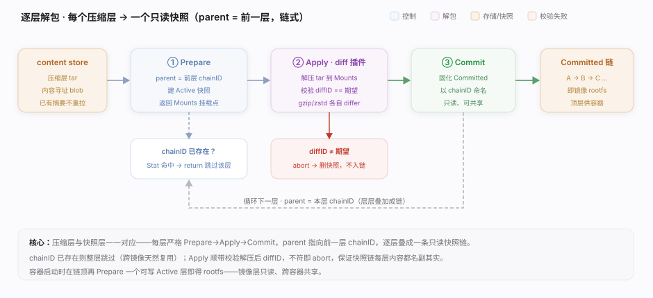
diff.Applier 解包、apply 成 snapshotter 的一个快照层。核实基准：client/pull.go、core/unpack/unpacker.go、core/diff/diff.go。ConcurrentLayerFetchBuffer）+ 本地缓存能显著提速。| 步骤 | 落点 | 动作 |
|---|---|---|
| Prepare | core/unpack/unpacker.go:79（Snapshotter） | 以前一层为 parent 建 Active 快照，拿 Mounts |
| Apply | core/diff/diff.go:80（Applier 接口）· core/diff/apply/apply.go:62（fsApplier.Apply 实现） | 把该层 tar 解压 apply 到挂载点 |
| Commit | core/unpack/unpacker.go:75（Platform 驱动） | 固化成 Committed 快照，作下一层 parent |
| 统筹 | image.Unpack client/image.go:301 | 对 manifest 每一层重复上述三步 |
| 阶段 | 动作 | 落点 |
|---|---|---|
| resolve | 解析镜像引用 → 拿到 manifest 摘要 | — |
| fetch manifest/config | 按摘要下载 | content store（blob） |
| fetch layers | 并发下载各层（压缩 tar） | content store（去重） |
| unpack 逐层 | Prepare→Applier.apply→Commit | snapshotter（Committed 链） |
| 完成 | 镜像对象引用 config + 快照链 | 元数据库记引用 |
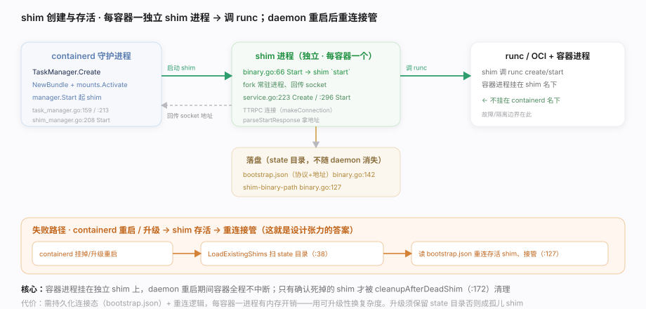
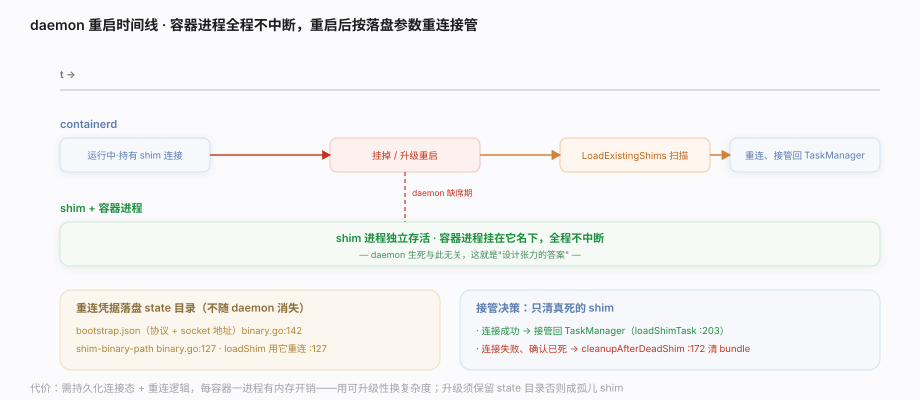
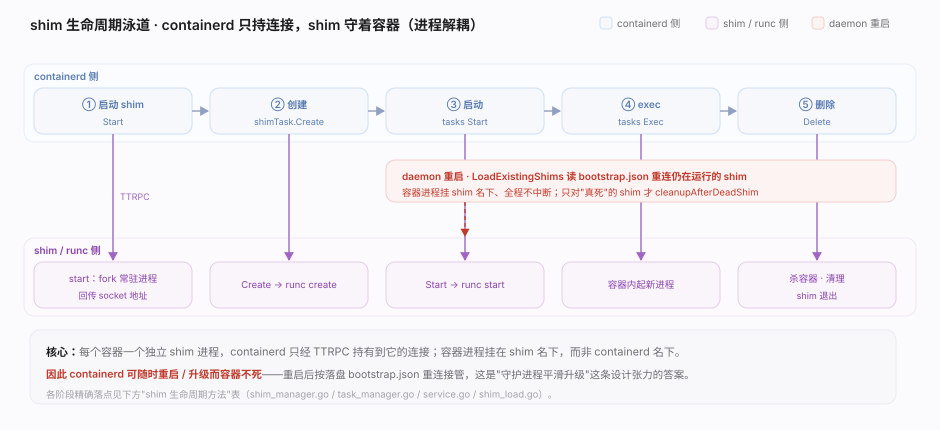
core/runtime/v2/task_manager.go、core/runtime/v2/shim_manager.go、core/runtime/v2/binary.go、core/runtime/v2/shim_load.go。opts.Runtime）：runc、kata（VM 隔离）、gVisor 等都以 shim 形式接入。LoadExistingShims 按 bootstrap.json 重连接管。| 阶段 | containerd 侧 | shim 侧 / 底层 |
|---|---|---|
| 启动 shim | shim_manager.go:208 Start | shim 二进制 start fork 常驻进程 |
| 创建容器 | task_manager.go:232 shimTask.Create | service.go:223 Create → runc create |
| 启动容器 | tasks 服务 Start | service.go:296 Start → runc start |
| exec 进程 | tasks 服务 Exec | shim 在容器内起新进程 |
| 删除 | task_manager.go:304 Delete | shim 杀容器、清理、退出 |
| 重启接管 | shim_load.go:38 LoadExistingShims | 读 bootstrap.json 重连 |
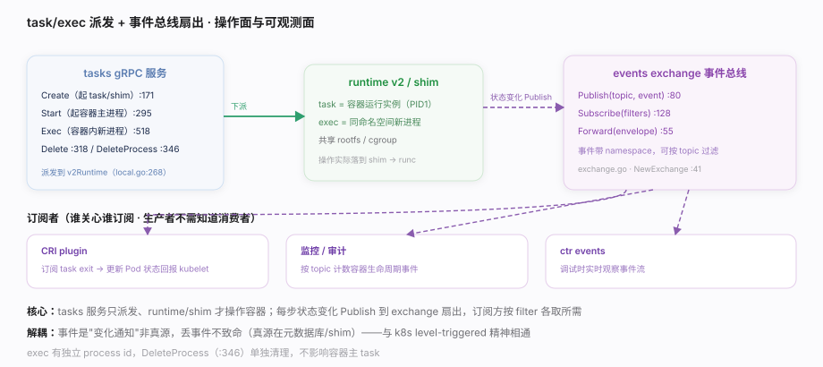
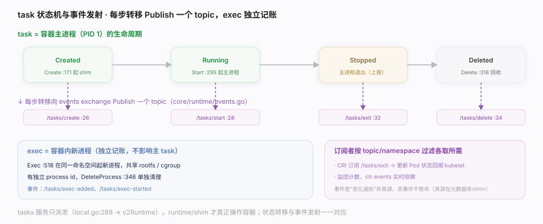
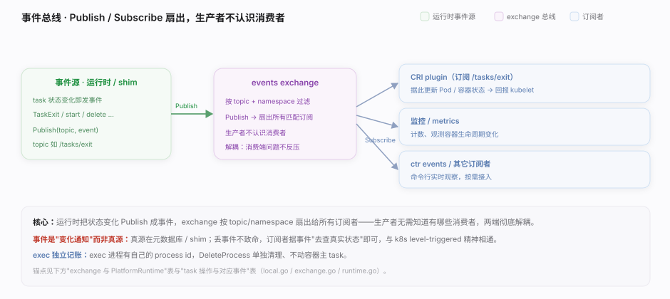
plugins/services/tasks/local.go、core/events/exchange/exchange.go。| 接口 | 落点 | 作用 |
|---|---|---|
| NewExchange | exchange.go:41 | 建全局事件总线 |
| Publish / Subscribe / Forward | exchange.go:80 · :128 · :55 | 发事件 / 按 filter 收流 / 转发 envelope |
| Publisher / Subscriber | core/events/events.go:68 · :78 | 生产者 / 消费者接口 |
| PlatformRuntime | core/runtime/runtime.go:71 | Create :75 起 shim · Get :77 取 task · Delete :82 回收退出码 |
| 操作 | tasks 服务方法 | 典型事件 topic |
|---|---|---|
| 创建 task | Create（local.go:171） | /tasks/create |
| 启动 | Start（:295） | /tasks/start |
| 容器内执行 | Exec（:518） | /tasks/exec-added, exec-started |
| 主进程退出 | （运行时上报） | /tasks/exit |
| 删除 task | Delete（:318） | /tasks/delete |
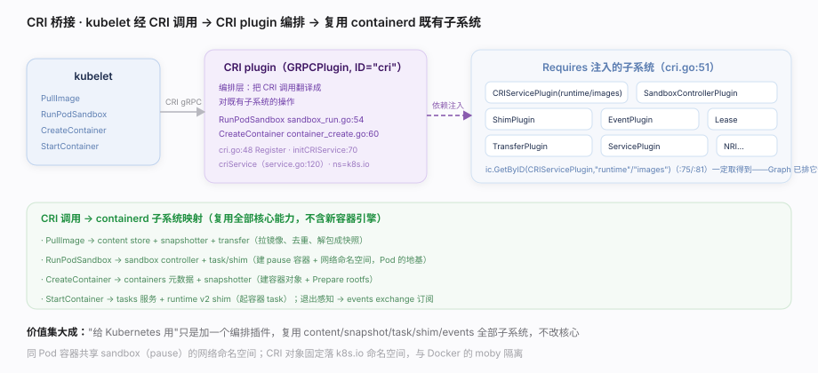
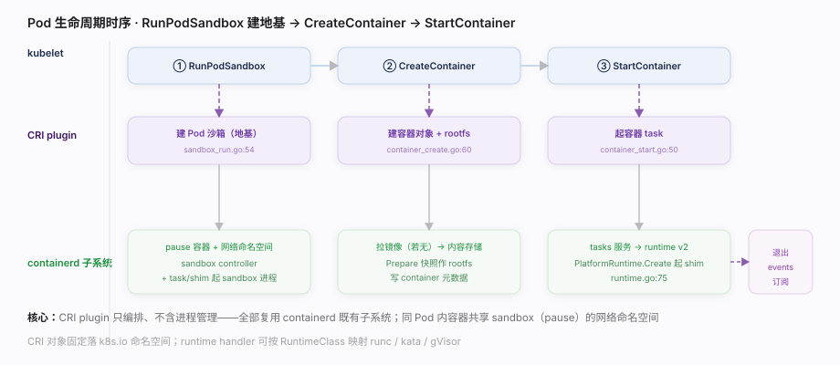
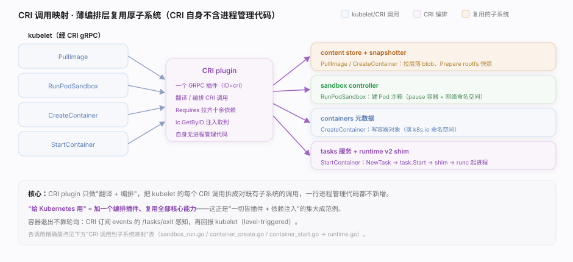
plugins/cri/cri.go、internal/cri/server/。disabled_plugins）减内存/攻击面。| kubelet 调用 | CRI plugin 动作 | 复用的 containerd 子系统 | 落点 |
|---|---|---|---|
| PullImage | 拉镜像 | content store + snapshotter + transfer | — |
| RunPodSandbox | 建 Pod 沙箱（pause + 网络） | sandbox controller + task/shim | sandbox_run.go:54 |
| CreateContainer | 建容器对象 + rootfs | containers 元数据 + snapshotter | container_create.go:60 |
| StartContainer | 起容器 task | tasks 服务 + runtime v2 shim | container_start.go:50 → runtime.go:75 |
| StopPodSandbox | 销毁沙箱 | sandbox controller | sandbox_stop.go:35 |
| 容器退出感知 | 订阅 exit 事件更新状态 | events exchange | — |